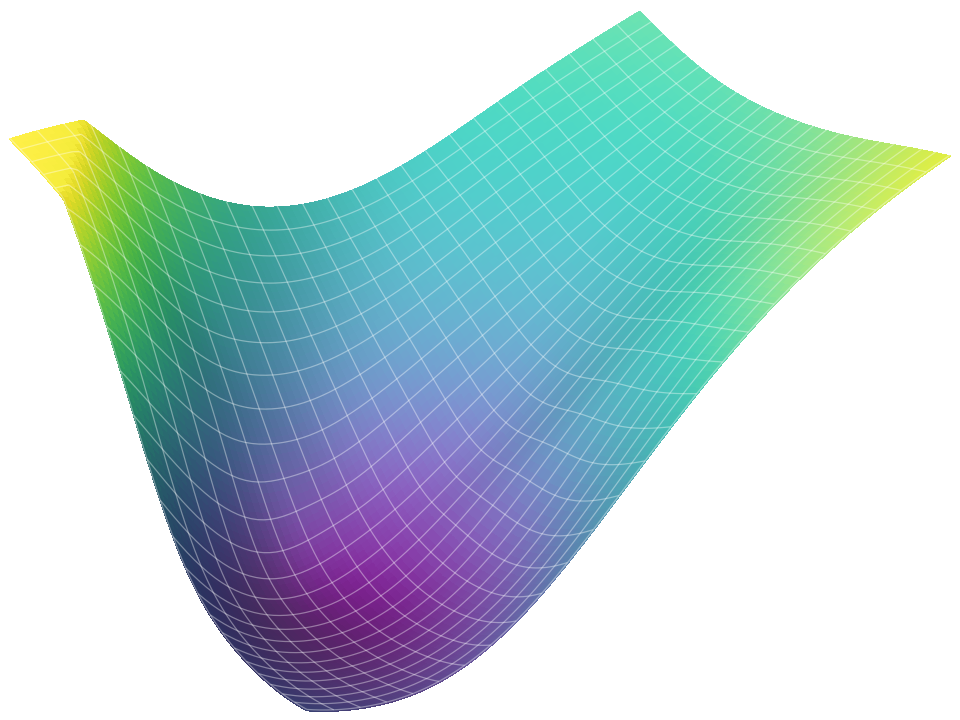
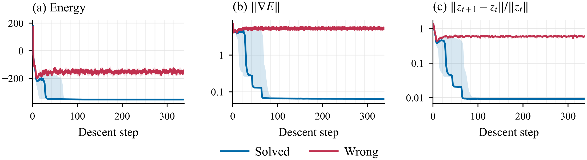
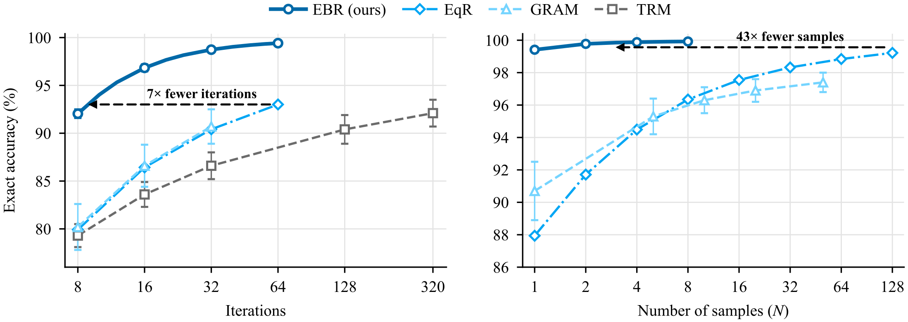
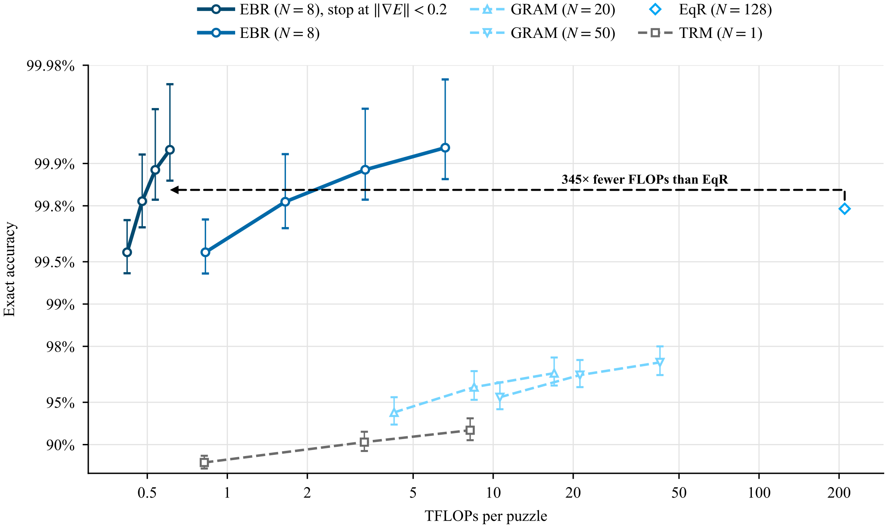

TL;DR – We introduce Energy-Based Reasoners (EBRs), reasoning models that learn an energy over latent reasoning states and reason by gradient descent on it. The same energy refines the state, tells it when to stop, and ranks candidate answers without an external verifier. With 1.8M parameters, EBRs reach over 99% accuracy on Sudoku-Extreme, using up to 345× fewer inference FLOPs than EqR at comparable accuracy, and they find more distinct valid solutions than prior methods on N-Queens and Graph Coloring.

Looping is a powerful inductive bias for reasoning. By repeatedly iterating a recurrent block, looped models can scale their effective depth and enable multi-step reasoning in latent space. However, existing looped models are not inherently guided by an explicit measure of progress, making it difficult to determine when to stop looping and how to improve upon the current state. To enable this, we introduce Energy-Based Reasoners (EBRs), which learn an energy function over latent reasoning states and formulate looped updates as gradient descent on this energy. The energy scores latent states, while its gradient guides refinement and provides a signal for stopping. To train EBRs effectively, we further introduce exploration-based training to discover additional modes and to better shape the energy landscape over a broader set of states. Across four algorithmic reasoning benchmarks, EBRs outperform prior recurrent reasoning models, achieving 99.9% accuracy on Sudoku-Extreme while using 345× less inference compute than the next-best model and maintaining comparable training compute. On all multi-solution benchmarks, EBRs achieve state-of-the-art coverage of distinct valid solutions while maintaining near-100% single-sample accuracy. These results suggest that energy-based models are a promising approach for strong reasoning performance.
Existing looped reasoners update their latent state without any explicit assessment of it. An EBR learns an energy function that guides refinement, stopping and selection.
Score. The energy rates the compatibility between the reasoning state and the initial board . Lower means better compatibility.
Refine. The gradient turns the score into an improvement direction.
Stop. The state becomes stationary once the gradient is small, so the gradient acts as a stopping criterion.
Select. Among multiple candidate solutions, we pick the one with the lowest energy.

Correct solutions settle at low-energy stationary states. Energy, gradient norm and step size during descent on Sudoku-Extreme. Correct trajectories settle at low energy with small gradients, while wrong ones keep moving.
Running more descent steps refines each answer further, and running more trajectories gives the energy more candidates to choose the lowest-energy one from.

EBRs reach EqR's best accuracy with 7× fewer iterations (left) and 43× fewer samples (right).
GRAM and TRM from GRAM's paper; EqR from its released checkpoint. Mean ± SD over three seeds.
Each trajectory stops once its energy gradient falls below a threshold, so easy puzzles finish in a few steps and hard ones keep going.

| Method | # Params | Sudoku-Extreme ↑ | Maze-Hard ↑ |
|---|---|---|---|
| Single sample (%) | |||
| TRM | 5–7M | 87.4 | 85.3 |
| EqR | 5–7M | 93.0 | – |
| FPRM | 7M | 94.2 | 87.0 |
| GRAM | 10M | 86.6 | – |
| Looped flows | 5–7M | 97.9 | 86.7 |
| EBROurs | 1.8M | 99.4 | 87.4 |
| Multiple samples (%), number of samples N in parentheses | |||
| PTRM | 5–7M | 98.8(100) | 86.7(100) |
| EqR | 5–7M | 99.8(128) | – |
| GRAM | 10M | 96.1(20) | – |
| Looped flows | 5–7M | 99.3(5) | 86.9(5) |
| EBROurs | 1.8M | 99.9(5) | 88.3(5) |
EBRs give the best single-sample accuracy among reasoning models. Within only 5 passes, they reach 99.9% and 88.3%, ahead of methods that draw up to 128. Stopping each trajectory once its energy gradient falls below a threshold keeps 99.9% accuracy with 10.9× fewer FLOPs than a fixed-depth EBR, allowing us to surpass EqR with 345× fewer FLOPs.
EBR acts like stochastic gradient descent and can capture many different solutions. Coverage captures the share of each input's distinct valid solutions that 20 samples find.
| Method | N-Queens | Graph Coloring | ||
|---|---|---|---|---|
| 8×8 | 10×10 | 8-vertex | 10-vertex | |
| Single sample | Pass@1 (%) ↑ | Conflicts ↓ | ||
| TRM | 66.8 | 17.5 | 109.3 | 170.7 |
| GRAM | 99.5 | 89.7 | 8.3 | 31.3 |
| EBROurs | 100 | 99.5 | 0 | 0 |
| 20 samples | Cov@20 (%) ↑ | Cov@20 (%) ↑ | ||
| TRM | 22.6 | 2.0 | 22.3 | 6.8 |
| GRAM | 89.7 | 57.5 | 85.8 | 51.3 |
| EBROurs | 98.1 | 92.0 | 88.6 | 54.5 |
Pass@1 (%) and Conflicts (edges summed over the test graphs) use one sample. Cov@20 is the share of distinct valid solutions found by 20 samples (%). Baselines from GRAM's paper.
@misc{chen2026energybasedreasoners,
title = {Energy-Based Reasoners: Your Reasoning Model Should Be an Energy-Based Model},
author = {Chen, William Xingxu and Gladstone, Alexi and Li, Zeyu Michael and Ji, Heng and Du, Yilun},
year = {2026},
note = {Preprint}
}